High Resolution Satellite Imagery
See the Earth like never before with Geospatial AI’s high-resolution satellite imagery. Our high resolution satellite imagery provides unparalleled detail and clarity of our data, enabling you to monitor and analyse the Earth’s surface across a wide range of applications. With our advanced satellite technology and data processing capabilities, we offer a comprehensive solution for your geospatial needs.
OPTICAL IMAGERY
Satellite data or satellite imagery is understood as information about Earth and other planets in the space, gathered by man-made satellites in their orbits. The most common use for satellite data is Earth Observation (EO): satellites deliver information about the surface and weather changes on the planet Earth.
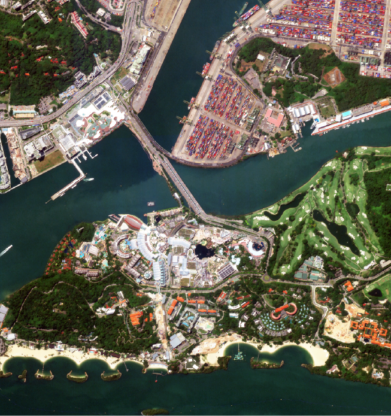
Sentosa Island,
Singapore
This 500-hectare resort island offers themed attractions, award-winning spa retreats, and resort accommodations, showcasing Singapore's bold vision as a top international leisure destination. 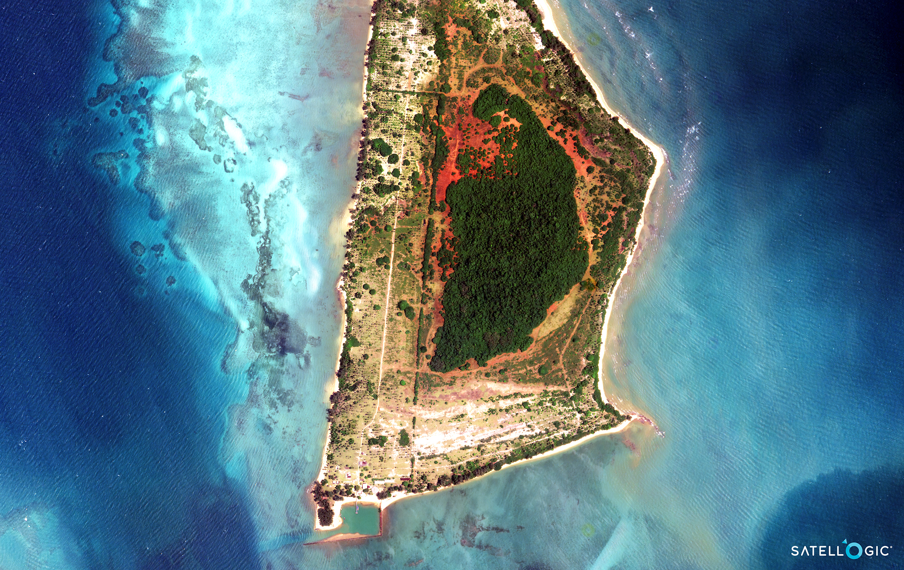
Koh Kradat,
Thailand
A serene island destination offering stunning beaches, vibrant marine life, and a tranquil escape for nature lovers. 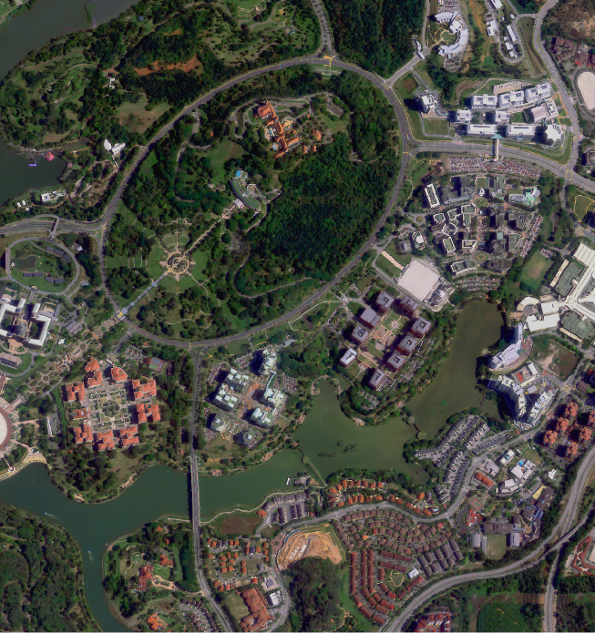
Putrajaya,
Malaysia
Putrajaya is the administrative center of Malaysia, planned as a garden city and intelligent city that emphasizes the adoption of and investment in internet, media, and digital communications. 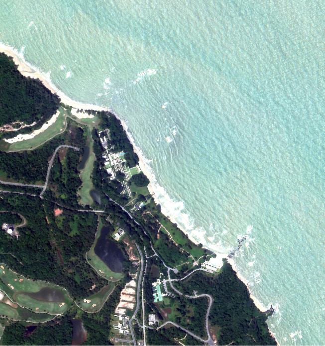
Desaru,
Johor, Malaysia
A picturesque getaway known for its pristine beaches, luxurious resorts, and exciting water sports, perfect for relaxation and adventure. 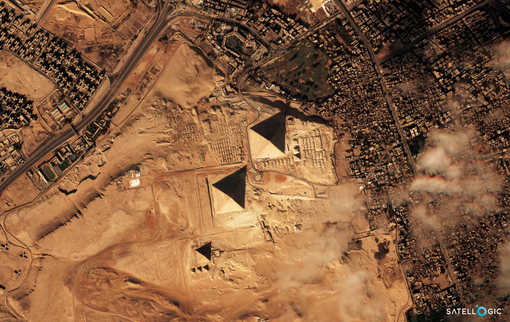
Great Pyramid of Giza,
Egypt
Home to the iconic Pyramids and the Sphinx, this historic destination offers a fascinating glimpse into ancient Egyptian civilization and remarkable architectural wonders. 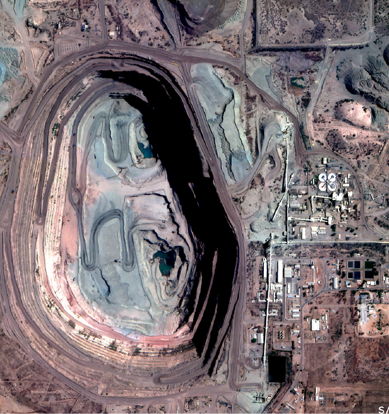
Orapa Diamond Mine,
Botswana, Southern Africa
Orapa mine is the ninth biggest diamond mine in the world that produces approximately 11 million carats (2200 kg) of diamonds, anually. 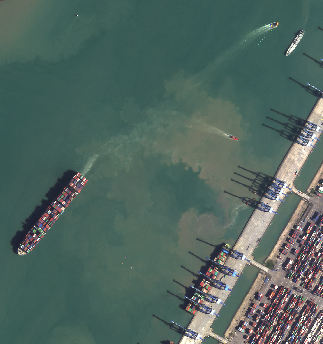
Westport, Port Klang
Malaysia
A key logistics and shipping hub in Malaysia, offering state-of-the-art facilities and efficient services to enhance trade and connectivity in the region. 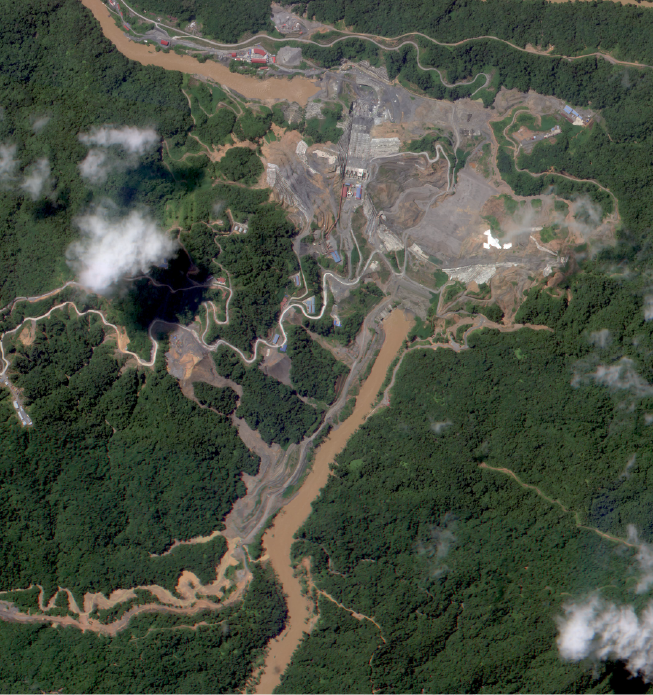
Baleh Hydroelectric Project
(HEP), Sarawak, Malaysia
A key infrastructure and hydro-industrialisation development project planned as part of the Sarawak Corridor of Renewable Energy (SCORE) to ensure sufficient energy capacity for Sarawak's future growth and development. 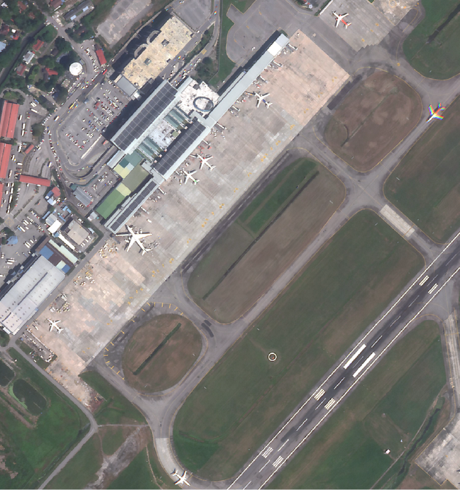
Penang International
Airport, Malaysia
A bustling international gateway that connects travelers to Penang's rich cultural heritage, culinary delights, and stunning landscapes, while offering modern amenities and services. - All satellite images are
- Powered by Satellogic
- Delivered by Geospatial AI Sdn Bhd
SAR
IMAGERY
Synthetic-aperture radar (SAR) is a form of radar that is used to create two-dimensional images or three-dimensional reconstructions of objects, such as landscapes. SAR uses the motion of the radar antenna over a target region to provide finer spatial resolution than conventional stationary beam-scanning radars.
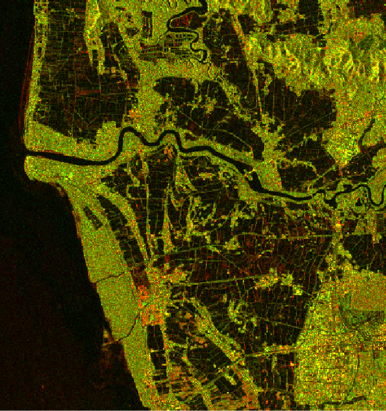
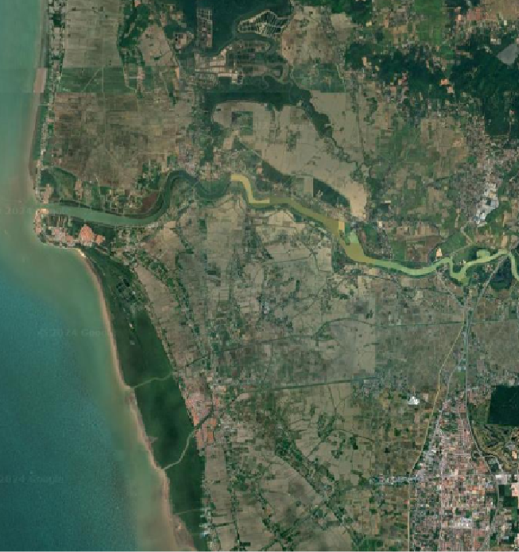
Penang Island,
Malaysia
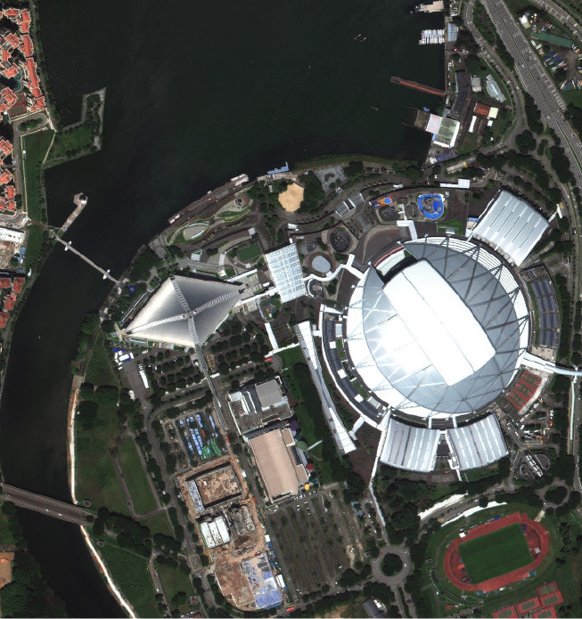
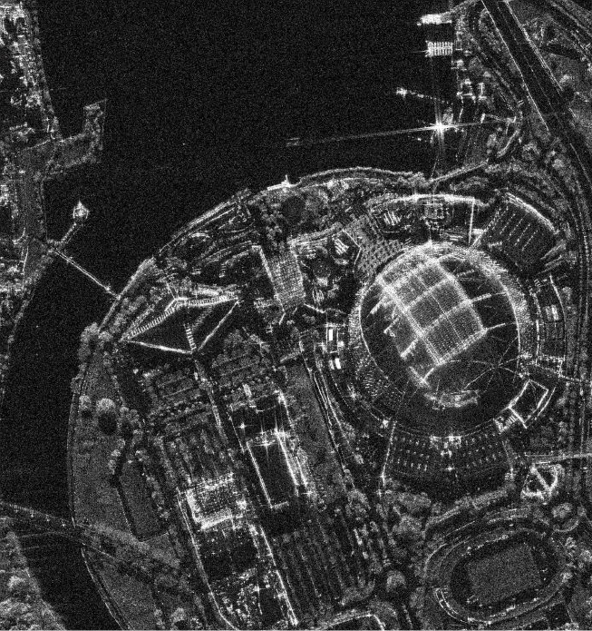
National Stadium,
Singapore
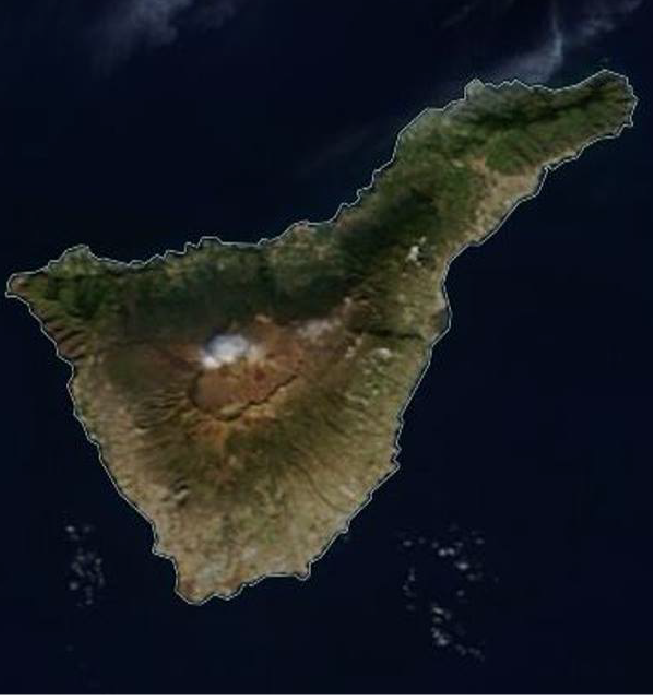
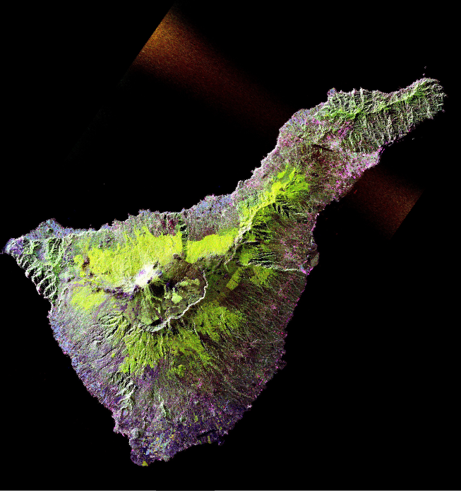
Volcano of
Mount Teide
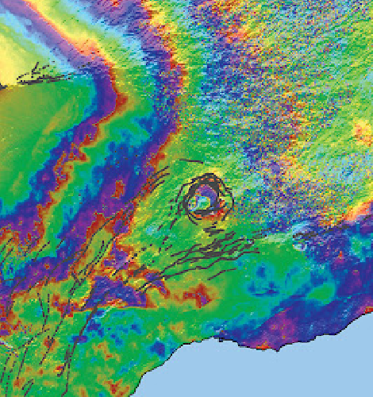
Inflation Event,
Hawaii, USA


Landslide Damage
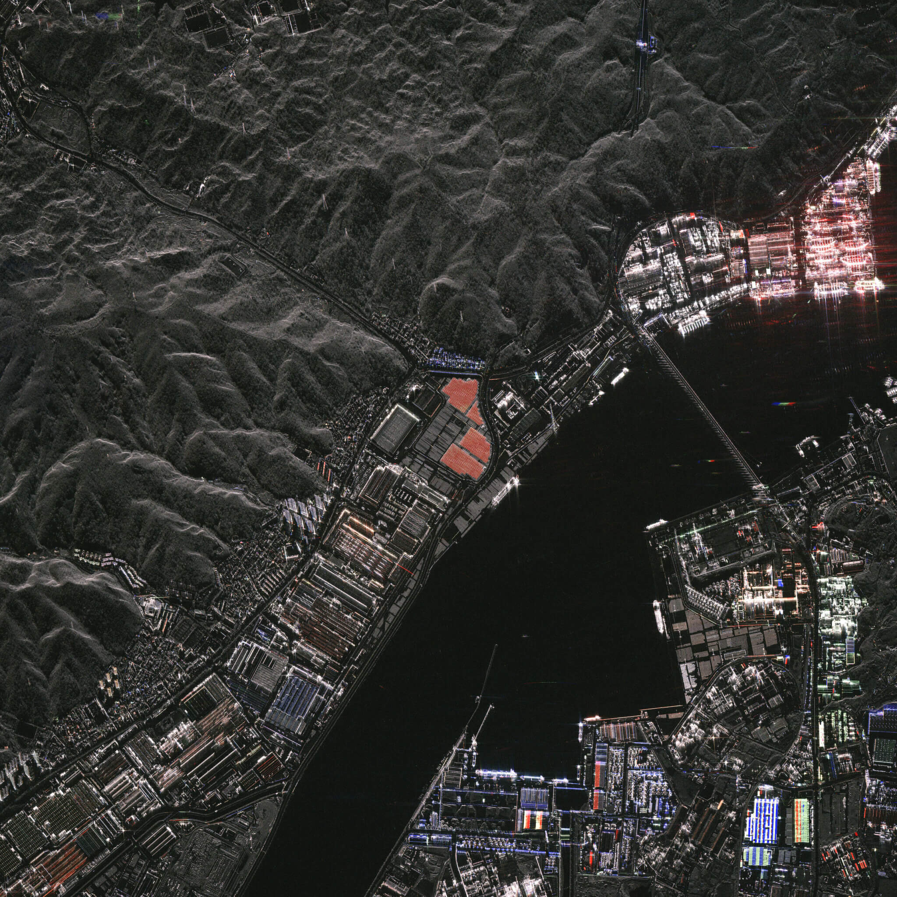
Detect and classify objects
- All satellite images are
- Powered by Satellogic, Umbra & Google Earth
- Delivered by Geospatial AI Sdn Bhd